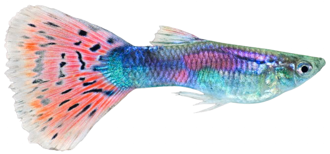
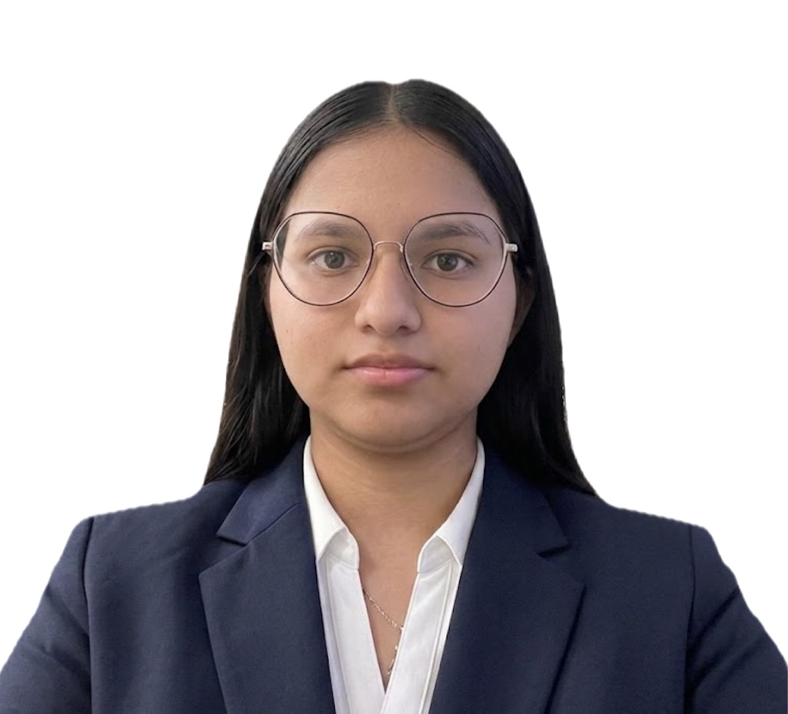
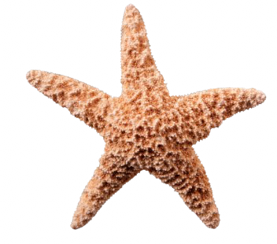
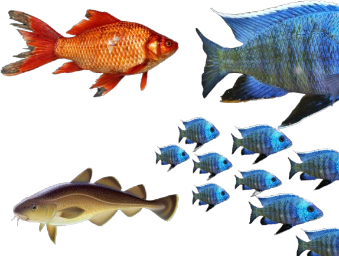

Cecilia Guadalupe Torres Castañeda es estudiante de Ingeniería Mecatrónica en el Tecnológico de Monterrey, Campus Sinaloa. Sus intereses académicos se centran en la robótica, la automatización y la programación. Profesionalmente, aspira a especializarse en el sector de la tecnología y la automatización industrial, con el objetivo de diseñar soluciones innovadoras que optimicen los procesos productivos.
Me considero una persona activa que disfruta plenamente de la vida al aire libre y de los pequeños placeres diarios. Me apasionan los animales y pasar tiempo rodeado de mascotas, siempre buscando pretextos para salir, explorar nuevos lugares y, por supuesto, hacer una parada obligatoria por un buen helado en un día soleado.

Elevator Pitch: https://drive.google.com/file/d/1X1IRK2rTDgq9R7-vQJ2g-S5XN0hcWuKe/view?usp=sharing
Título: La Inteligencia Artificial y su Incidencia en la Educación: Transformando el Aprendizaje para el Siglo XXI
Tema: Impacto y desarrollo de la ingeniería mecatrónica.
Idea Principal: Integración interdisciplinaria para el desarrollo social; Automatización de procesos y productos inteligentes; Mejora de competitividad, calidad y funcionalidad.
Propósito: Exponer importancia en sociedad moderna; Informar sobre beneficios tecnológicos; Analizar retos y futuro de la disciplina.
Público: Comunidad científica y académica; Estudiantes de ingeniería; Sector industrial y empresarial; Sociedad en general.
Información Relevante: Top 10 tecnologías del siglo XXI (MIT); Sistemas de control por microprocesadores; Frenos ABS y seguridad vial; Miniaturización y micro-mecatrónica.
Inferencias: Necesidad de reforma en educación tradicional; Dependencia económica de la innovación; Sustitución de fuerza laboral no calificada; Sinergia como motor de competitividad.
Opiniones: Mejora sustancial de calidad de vida; Papel clave y estratégico en la sociedad; Generación de soluciones futuristas y cómodas.
En la agricultura actual, la sobreirrigación provoca un desperdicio considerable de agua, la contaminación de acuíferos por agroquímicos y el ensalitramiento de los suelos. Ante la creciente escasez de este recurso hídrico, la ingeniería mecatrónica aporta soluciones eficaces mediante la integración de dispositivos de control, redes de comunicación e informática. El presente estudio evalúa el desarrollo de un sistema de riego automatizado en tiempo real capaz de determinar con precisión el momento y la cantidad exacta de agua aplicada.
La investigación se realizó en el Colegio de Postgraduados (Campus Montecillo) en un cultivo de calabaza Zucchini Grey. La arquitectura integró una estación meteorológica, un datalogger CR10X, un módulo de relevadores, electroválvulas y una tarjeta de comunicación NL100 para transmitir datos a un servidor central Web/WAP. El programa ejecutó subrutinas automatizadas que accionaron las válvulas electromagnéticas al alcanzar los umbrales de humedad establecidos.
La estrategia TDR utilizó la menor cantidad de agua (152.14 L/m²) con la mayor productividad hídrica (75.96 kg/m³ de fruto). La estrategia del lisímetro registró el mayor rendimiento (3.68 kg/m²). Todo el sistema ofreció un monitoreo remoto continuo en tiempo real desde celulares y navegadores Web.
Se demostró que es plenamente factible controlar el riego de forma automática y precisa mediante la convergencia de algoritmos, sensores y tecnologías de la información. El sistema desarrollado constituye una herramienta mecatrónica eficiente que optimiza la aplicación del agua en el campo, sirviendo como fundamento para impulsar la modernización agrícola.
Castro Popoca, M., Aguila Marín, F. M., Quevedo Nolasco, A., Kleisinger, S., Tijerina Chávez, L., & Mejía Sáenz, E. (2008). Sistema de riego automatizado en tiempo real con balance hídrico, medición de humedad del suelo y lisímetro. Agricultura Técnica en México, 34(4), 459-470.
Video: https://drive.google.com/file/d/1iXeCISdAUGJW53DqCERwci74tCzwjTEe/view?usp=sharing
Explorando su impacto moderno y minimalista.
